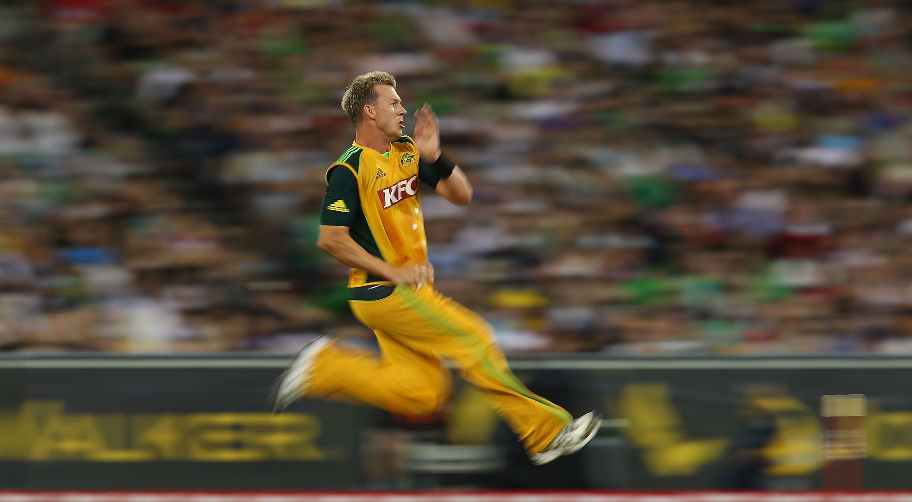

Brett Lee
Role: Right-arm Fast Bowler
Bio: Brett Lee was one of the fastest bowlers in the history of cricket, known for his extreme pace and ability to bowl lethal yorkers. He was a constant threat in both Test and limited-overs formats, often rattling batsmen with his sheer speed.
Career Stats
| Format | Matches | Innings | Wickets | Best Bowling | Average | Economy | Strike Rate | 5-wicket Hauls | 10-wicket Hauls |
|---|---|---|---|---|---|---|---|---|---|
| Test | 76 | 150 | 310 | 5/30 | 30.81 | 3.46 | 53.3 | 10 | 0 |
| ODI | 221 | 217 | 380 | 5/22 | 23.36 | 4.76 | 29.4 | 9 | 0 |
| T20 | 25 | 25 | 28 | 3/23 | 25.50 | 7.87 | 19.4 | 0 | 0 |
Memorable Moments

Brett Lee’s blistering pace made him one of the most feared fast bowlers in the world.
Key player in Australia’s World Cup triumphs, dominating the opposition with raw pace.